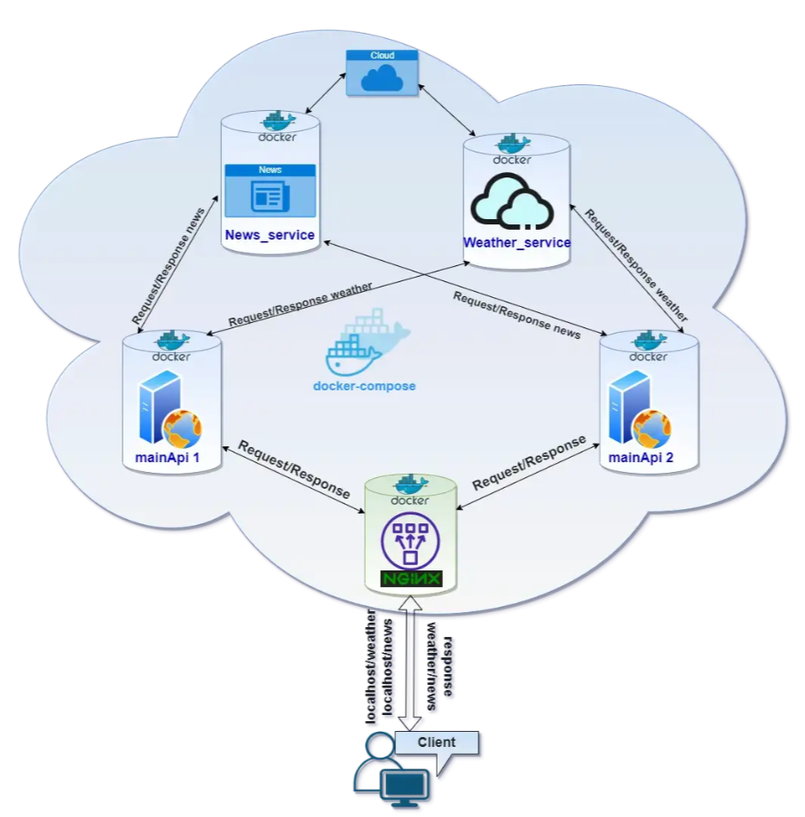

Introduction
This is a simple python based application that demonstrates how to deploy a microservice application that is fronted by a nginx load-balancer. All application components are packaged as containers and orchestrated using docker-compose. 
Application components
This application has the following components:
- nginx service - This is used to front all traffic and load-balance it across the master-services
- master service - Represents the scaled-out main application used to front and redirect traffic to appropriate downstream services - news & weather
- news service - Represents the news service that delivers the news by country. News service uses publicly available service NewsAPI
- weather service - Represents the weather service that delivers the weather by city. Weather service uses a publicly available service OpenWeather
Application Structure
|── docs # Contains edited nginx configuration file that will be copied to the image
| ├── img # Contains all images referenced in mkdocs
| ├── *.md # Other mkdocs .md files
├── mkdocs.yml # YAML for for mkdocs
├── .gitattributes
|
├── Dockerfile # Dockerfile for the main application
├── Dockerfile.nginx # Dockerfile for the nginx load-balancer
├── Dockerfile.news # Dockerfile for the news service
├── Dockerfile.weather # Dockerfile for the weather service
├── requirements.txt # Specifies packages that need to be installed in the container
|
├── docker-compose.yaml # Defines docker-compose.yaml file for web-app & nginx-reverse-proxy
├── nginx.conf # Contains edited nginx configuration file that will be copied to the image
|
├── master_assistant.py # Simple primary app built using Python's Flask API
├── weather.py # Simple weather app built using Python's Flask API
├── news.py # Simple news app using Python's Flask API
|
├── README.md # Standard README.md file
Pre-requisites
- This application only requires python and docker installed on your computer
- Create project folder
python-nginx-microservice - Navigate to project folder
PS C:\Users\aniru\workspace\github> cd .\python-nginx-microservice\
PS C:\Users\aniru\workspace\github\python-nginx-microservice>
- Important : Ensure all files are in UTF-8 format. UTF-16 causes issues with Docker.
- Copy and create file
requirements.txt. This will be used to tell docker to install required software.
aniso8601==8.1.0
blinker==1.4
certifi==2020.12.5
chardet==4.0.0
click==7.1.2
Flask==1.1.2
Flask-Jsonpify==1.5.0
flask-requests==0.0.14
Flask-RESTful==0.3.8
Flask-SQLAlchemy==2.4.4
idna==2.10
itsdangerous==1.1.0
Jinja2==2.11.2
MarkupSafe==1.1.1
pampy==0.3.0
pytz==2020.4
requests==2.25.1
six==1.15.0
SQLAlchemy==1.3.20
urllib3==1.26.3
Werkzeug==1.0.1
Credits
I would like to thank the author (@manos_kakarakis) of this orginal post whose code and methodology I have used as is. Python Flask scalable microservices using docker-compose and Nginx load balancer